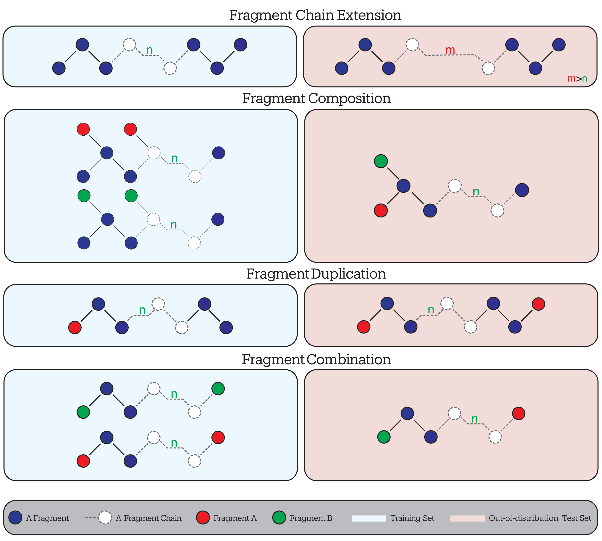

Every component of the slide theme, on one deck
Cardiff University
A lead sentence states the point of the slide in plain words.
Key point: one sentence the audience should remember from this slide.
Warning: use amber for the surprising or failing case.
Seen in training
New combinations
Fusion
Two groups merge into one composite group.
Duplication
A familiar group appears twice.
Combination
Two known groups share one backbone.

Put the evidence on the left, and two or three lines on the right telling the audience what to look at.
Point at one thing only.
References go in a .slide-ref block and sit just above the footer.
| Model | Seen (meV/Å) | Unseen (meV/Å) | Ratio |
|---|---|---|---|
| SchNet | 12.4 | 418.0 | 34× |
| MACE | 3.1 | 96.2 | 31× |
| EquiFormerV2 | 2.7 | 88.5 | 33× |
| UMA (FT) | 3.4 | 140.9 | 41× |
Illustrative numbers only.
1000× larger error on molecules built from familiar parts
The energy is a sum of atomic contributions:
\[ E = \sum_{i=1}^{N} \varepsilon\left(\mathbf{r}_i, \{\mathbf{r}_j\}_{j \in \mathcal{N}(i)}\right) \]
Questions are welcome.
Slide template